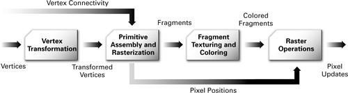
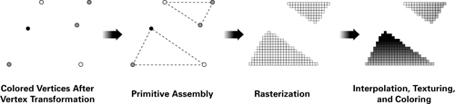

WebGL Workshop:
Graphics programming for the web
(Use Up/Down arrow keys to navigate.)
WebGL Workshop:
Graphics programming for the web
(Use Up/Down arrow keys to navigate.)
WebGL is a Javascript API for rendering interactive 3D computer graphics and 2D graphics within any compatible web browser without the use of plug-ins. It is designed and maintained by Khronos Group.
Wikipedia
Google Doodle: Rubik's Cube
Available (almost) everywhere
get.webgl.org
WebGL Javascript API ...
Graphics pipeline
Rendering stages

Rasterisation

In practice: use a library
three.js (threejs.org)
sceneJS (scenejs.org)
Babylon.js (babylonjs.com)
CopperLicht (ambiera.com/copperlicht)
TWGL (twgljs.org)
... and more
<script src="https://cdnjs.cloudflare.com/ajax/libs/three.js/r74/three.min.js">
three.js
Let's dive in.
Just a few steps to get started.
<!DOCTYPE html>
<html>
<head>
<meta charset="utf-8">
<style>
html, body { height: 100%; margin: 0; }
</style>
</head>
<body>
<script src="https://cdnjs.cloudflare.com/ajax/libs/three.js/r74/three.min.js"></script>
<script>
// Code goes here
</script>
</body>
</html>
0. Web page skeleton
This is the bare minimum we need to get a full-page WebGL app running. Let's code into the second <script>tag.
var renderer = new THREE.WebGLRenderer(); var width = window.innerWidth; var height = window.innerHeight; renderer.setSize( width, height ); document.body.appendChild( renderer.domElement );
1. Setup render context
THREE.WebGLRenderer creates a rendering context for us to add geometry and lights to be drawn. We set the dimensions of our renderer, and append it to the webpage.
var scene = new THREE.Scene();
var geometry = new THREE.SphereGeometry( 1, 32, 32 );
var material = new THREE.MeshBasicMaterial( { color: 0xd5631d } );
var object = new THREE.Mesh( geometry, material );
scene.add( object );
var camera = new THREE.PerspectiveCamera( 55, width / height, 1, 1000 );
camera.position.z = 3;
2. Create geometry and camera
THREE.Scene is our scene manager, smart enough to know what to do with different objects. We give it one geometry, a THREE.SphereGeometry, and apply a 'flat' material for the look. They are linked by THREE.Mesh, which is added to the scene manager.
We create a THREE.PerspectiveCamera so we have a point of reference.
function draw () {
window.requestAnimationFrame( draw );
renderer.render( scene, camera );
}
draw();
3. Start rendering
Use window.requestAnimationFrame to hook a function call at the next time your browser updates. By calling itself in a nested function, we effectively have this function called every frame. renderer.render() tells THREE.WebGLRenderer to render the next frame.
var light = new THREE.PointLight( 0xffffff, 1 ); light.position.set( 10, 10, 10 ); scene.add( light );
For a more '3D' feel, we can add a THREE.PointLight into the scene. We also have to update the material to a THREE.MeshPhongMaterial to receive light. Phong is a classic shading model that combines basic shading and highlight.
var material = new THREE.MeshPhongMaterial( { color: 0xd5631d } );
4. Light up the world
var material = new THREE.MeshLambertMaterial({
map: THREE.ImageUtils.loadTexture('img/mars_1k_color.jpg')
});
5. Apply texture mapping
ThreeJS supports a very simple way to apply textures. For example, we can use MeshLambertMaterial to wrap an image around the sphere.
THREE.ImageUtils.loadTexture is a quick function to load images with minimal code.
Shaders: Graphics Programs
Programmable graphics pipelines
Shaders
Why shaders?
Vertex and Fragment Shaders
WebGL GLSL (OpenGL ES 2.0) pre-defined variables
ThreeJS pre-defined variables
varying vec2 vUv;
void main() {
vUv = uv;
gl_Position = projectionMatrix * modelViewMatrix * vec4(position, 1.0);
}
Vertex shader example
To project 3D point into screen space, we can use three.js built-in position attribute and transform it. This is done by making it a homogeneous vector and pre-multiplying it by projectionMatrix * modelViewMatrix. Note that gl_Position must be assigned to tell the driver where this point is.
We pass three.js built-in uv attribute to a varying variable, so the values are interpolated when they get to the subsequent fragment shader.
uniform sampler2D map;
varying vec2 vUv;
void main() {
gl_FragColor = texture2D(map, vUv);
}
Fragment shader example
Here we take the uniform variable map and pass it into a texture sampler, which effectively wraps an image around a geometry. Three.js primitives like the sphere we created has spherical uv coordinates, which wraps top to bottom, and around the sphere. gl_FragColor takes a 4-vector, which describes the colour RGB and opacity A.
Shader example
Let's use shaders to shine up our scene.
var vertexShader = document.getElementById('basic_shader_vertex').textContent;
var fragmentShader = document.getElementById('basic_shader_fragment').textContent;
var material = new THREE.ShaderMaterial({
uniforms: {
map: { type: 't', value: THREE.ImageUtils.loadTexture('img/mars_1k_color.jpg') }
},
vertexShader: vertexShader,
fragmentShader: fragmentShader
});
1. THREE.ShaderMaterial
THREE.ShaderMaterial provides runtime shader loading functions. You can pass in custom variables via uniforms, and your own shaders as shown. Here I've named a variable called map.
var material = new THREE.ShaderMaterial({
uniforms: {
map: { type: 't', value: THREE.ImageUtils.loadTexture('img/mars_1k_color.jpg') },
light: { type: 'v3', value: new THREE.Vector3(10, 10, 10) }
},
vertexShader: vertexShader,
fragmentShader: fragmentShader
});
2. Add a light source
To add a light source in shaders we can pass in a custom variable called light. We set its position as a 3-vector.
varying vec2 vUv;
varying vec3 vNormal;
void main() {
vUv = uv;
vNormal = normalize(normalMatrix * normal);
gl_Position = projectionMatrix * modelViewMatrix * vec4(position, 1.0);
}
3. Surface normals (vertex)
The mathematics of lighting can be boiled down to a simple formula: when light shines directly above, it's bright. When light shines from a glancing angle, it's not as bright. Think sunrise and sunset.
Premultiplying normalMatrix is needed to get our normals into screen space. normalize() scales the result to a unit vector, which is important for lighting purposes.
uniform sampler2D map;
uniform vec3 light;
varying vec2 vUv;
varying vec3 vNormal;
void main() {
// Light up Mars
vec4 lightPos = viewMatrix * vec4(light, 1.0);
float illumination = dot( vNormal, normalize(lightPos.xyz) );
vec4 color = texture2D(map, vUv) * clamp(illumination, 0.0, 1.0);
// Red planet glow
float viewFactor = dot( vNormal, vec3(0.0, 0.0, 1.0) );
vec3 glow = vec3(0.9, 0.1, 0.2) * (1.0 - viewFactor);
gl_FragColor = 0.25 * vec4(glow, 1.0) + color;
}
4. Lighting (fragment)
Battery-included starting point: [link]
What is WebGL being used for?
Real-world applications today.
Web + VR = WebVR
mozvr.com/projects/sechelt
Video games
cryptarismission.com
Scientific Visualisation
research.csiro.au/static/airquality/smoke-and-fire
Preview 3D Printing
thingiverse.com/thing:342381
Data Storytelling
bear71.nfb.ca/#/bear71
Takeaways
Upcoming: WebGL 2.0 Draft
fin
Questions?